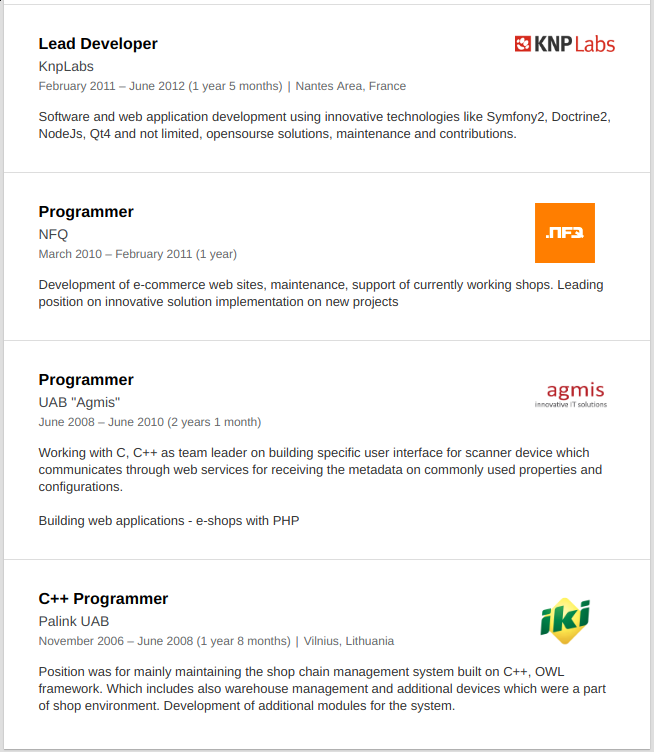
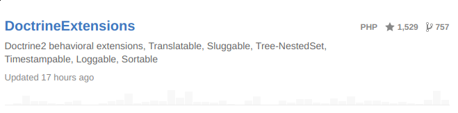
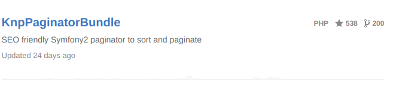
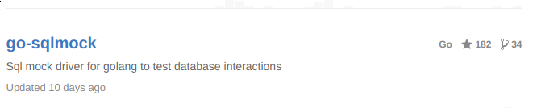

The path of software engineer
My background
Gediminas Morkevičius aka @l3pp4rd
About 10 year experience in software development
A little about my carrier
Author of some open source projects
  Programming languages
- PHP, Javascript - 5 years
- C, C++ - 3 years
- Java - 2 years
- GO - 2 years
- Albert Einstein
“Genius is 1% talent and 99% percent hard work...”
“The only source of knowledge is experience.”
“The more I learn, the more I realize how much I don't know.”
The following is true no matter how special you are..

There are a lot of trending technologies, but they do not invent nothing new
stop chasing the trends and learn fundamentals
- Networking - TCP/IP
- HTTP protocol
- Procedural and functional programming
- MVC design pattern
What traits I think were the reason?
- Thinking outside the box.
- Open source activity.
- Quality
- Taking risks, investing free time.
- Love to what I do.
Accepting failures in life
The more mistakes you make the better you get.
Everything in life is just an experiment.
Failure - is a step towards success.
Thank you
Slides are available at: slides.gediminasm.org
Powered by: Revealjs